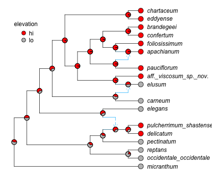

Many visualizations are interesting, and they are essential for communication. We give here a few examples. For each example, we suggest that you go step by step and inspect each element in the code. The more the code makes sense, the more we can customize it later for our own needs on other data sets.
discrete trait data at the tips
Following the example of a discrete trait, of high or low elevation, let’s visualize the data at the tips.
Code
R"par"(mar=[0,0,0,0]);# plot and save the "res"ult to get point coordinates, to use for adding annotation on topres =plot(net, tipoffset=0.5, xlim=[0.5,16]);res[1:4] # x and y limitsres[13] # info to add node annotationsres[14] # info to add edge annotations# find the order "o" in which species from data are listed in the network -- and in reso = [findfirst(isequal(tax), dat.morph) for tax intipLabels(net)]dat.morph[o] ==tipLabels(net) # should be true, if order o is as intendedtips = res[13][!,:lea]dat.morph[o] == res[13][tips,:name] # should be true# next: add grey & red points at the leavestip_col =map(x -> (x=="lo" ? "grey":"red"), dat.elevation[o])R"points"( x=res[13][tips,:x] .+0.1, y=res[13][tips,:y], pch=16, col=tip_col, cex=1.5);# next: add a legend to say which color is for which stateR"legend"(x=1, y=19, legend=["hi","lo"], pch=16, col=["red","grey"], title="elevation", bty="n", var"title.adj"=0); # var"" to allow for a dot in the variable name: R's fault...# next: add γ's for gene flow edgeshybminor = res[14].minhybdf = res[14][hybminor, [:x,:y,:gam]]R"text"(hybdf.x .-0.1, hybdf.y +0.5.*[-1,1,1], hybdf.gam, col="deepskyblue", cex=0.75);
Figure 1: showing a discrete trait at the tips
ancestral probabilities
Now let’s go one step further and visualize the probabilities of “high” and “low” elevation (as a binary trait) from this figure(b) with pie charts instead of boring hard-to-read numbers.
Code
colnames =names(asr)[3:end] # to get the correct state - probability match# create a new column in the asr data frame, filled with the empty string ""asr[!,:fake] .=""; # to add fake internal node labels later: and extract their positionsasr # just to checkcoltrait = ["red","grey"] # or anything else: names that R knows how to interpret# start the plotR"par"(mar=[0,0,0,0]);res =plot(fit.net, tipoffset=0.5, xlim=[0.5,16], arrowlen=0.15, nodelabel = asr[:,[:nodenumber, :fake]]);ndf = res[13] # had locations of internal nodes, this time# add pie charts, using locations of internal nodesfor i in1:nrow(asr) # loop over each row in the ancestral state reconstruction data frame ii =findfirst(isequal(string(asr[!,:nodenumber][i])), ndf[!,:num]); colpp =Vector(asr[i,colnames]); R"ape::floating.pie.asp"(ndf[ii,:x], ndf[ii,:y], colpp, radius=0.2, col=coltrait);end# add legend with correct mapping of color -> stateR"legend"(x=1, y=19, legend=colnames, pch=21, var"pt.bg"=coltrait, bty="n", title="elevation", var"title.adj"=0, var"pt.cex"=1.5);

Figure 2: pie charts to show ancestral state probabilities
continuous trait data at the tips
Here is an example to vizualize the actual elevation values, at the tips.
Code
R"par"(mar=[2,0,1.5,0]);# plot the network with a large tip offset to leave space for barsres =plot(net, tipoffset=2.2, xlim=[0.5,17]);# create a standardized version of elevation, such that 0 corresponds to the mean,# and such that the range covers an interval of length 2:# for the bars to fit between the tips and the taxon nameso = [findfirst(isequal(tax), traits.morph) for tax in res[13].name] # orderingintervallength =2std_elev = intervallength .*standardize(UnitRangeTransform, traits.elevation[o])std_elev .-=mean(std_elev) # now mean = 0, interval length still as desiredlinecol = [(el <0 ? "grey":"red") for el in std_elev] # grey if elevation < mean, red if elevation > meanm =minimum(std_elev) # new minimum elevation, after "standardization"x0 = res[13][1,:x] +0.1# x where the smallest bar should extendxmean = x0 - m # x where the mean value will go# create the barsR"segments"(x0 = xmean, x1 = xmean .+ std_elev, y0=res[13].y, col=linecol, lwd=10, lend=1); # thick lines, line ends of "butt" type# label the horizontal axis to show the original min and max elevationsmin_evel, max_elev =round.(extrema(traits.elevation[o]), digits=2);R"axis"(at=[x0, x0+intervallength], labels=round.([min_evel,max_elev], digits=2), side=1, line=-0.5, tck=-0.01);R"text"(x=x0, y=21, "elevation (km)", adj=0);
Figure 3: bar plot to visualize continuous traits at the tips. red: above average. grey: below average
ancestral state for a continuous trait
Let’s change and look at log-leaflet area this time. We can use a color gradient to visualize ancestral state reconstructions. The issue to keep in mind, when reading such a visualization, and that we don’t see confidence intervals, and those tend to be wider and wider as we move back in time toward the root (assuming data on extant taxa only).
Code
# fit the model, get ancestral state predictionsfit_larea =phylolm(@formula(larea ~1), traits, net, tipnames=:morph, withinspecies_var=true, y_mean_std=true)asr_larea =expectations(ancestralStateReconstruction(fit_larea))asr_larea[!,:fake] .=""; # fake empty labels# convert numerical ancestral states to colors, using a paletteasr_larea_01 =standardize(UnitRangeTransform, asr_larea.condExpectation) # values ranging in 0-1@rlibrary viridismypalette =rcopy(viridis(256)) # 256 possible colors in the paletteimportCategoricalArrays: cutbreaks = [i/256 for i in0:256]asr_larea_index =convert(Vector{Int}, cut(asr_larea_01, breaks; extend=true, labels=1:256))asr_larea_colr = mypalette[asr_larea_index]# start the plotR"par"(mar=[0,0,0,0]);res =plot(net, tipoffset=0.5, xlim=[0.5,16], nodelabel = asr_larea[:,[:nodeNumber, :fake]]);# find order to match tips between asr_larea and res[13]ndf = res[13]o = [findfirst(isequal(nn), asr_larea.nodeNumber) for nn inparse.(Int, ndf.num)]asr_larea.nodeNumber[o] ==parse.(Int, ndf.num) # should be true# add the colored circlesR"points"(x=ndf.x, y=ndf.y, pch=16, col=asr_larea_colr[o], cex=1.5);# add legendm,M =string.(round.(extrema(asr_larea.condExpectation), digits=2))R"legend"(x=0, y=19, bty="n", adj=0, var"y.intersp"=0.5, border="NA", legend = [m,"","","",M], fill = mypalette[[1, 64, 128, 192, 256]]);
Figure 4: prediction of mean log-leaflet area (not showing uncertainty)